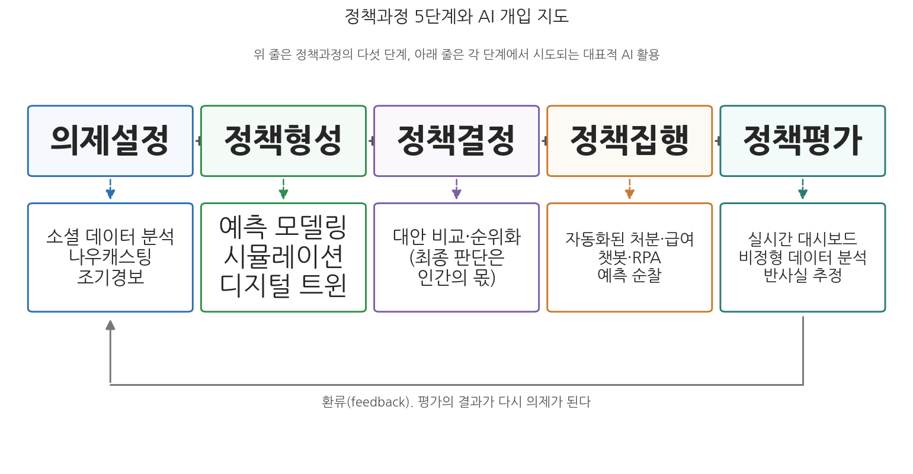
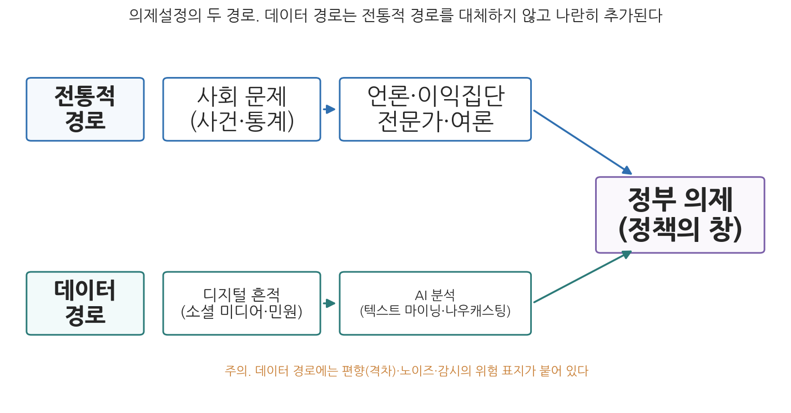

9주차 1차시. AI와 정책과정 (1): 의제설정과 정책형성
정책학은 공공질서의 의사결정 과정"에 관한" 지식과 그 과정 "안에서 쓰이는" 지식을 다루는 학문이다. (해럴드 라스웰, 『정책학 서설(A Pre-View of Policy Sciences)』, 1971)
이 장에서 배우는 것
2011년 무렵, UN 사무총장실 산하의 작은 조직 하나가 흥미로운 실험을 시작했다. 개발도상국에서 식량 가격이 폭등하면 가장 먼저 흔들리는 것은 빈곤층의 식탁인데, 정부와 국제기구가 이를 알아차리는 것은 언제나 한발 늦었다. 공식 물가 통계가 집계되어 보고서로 올라오기까지 수 주에서 수 개월이 걸리기 때문이다. UN 글로벌 펄스(Global Pulse)라 불리는 이 조직은 발상을 바꾸었다. 통계를 기다리는 대신, 사람들이 일상에서 남기는 디지털 흔적을 실시간으로 읽기로 한 것이다. 휴대전화 선불 요금 구매 패턴이 비정상적으로 변하고, 소셜 미디어에 주식(主食) 가격을 걱정하는 글이 늘어나는 것은 식량 위기가 공식 통계에 잡히기 전에 나타나는 조기 신호였다. 이 신호를 포착한 분석은 식량 안보를 각국 정부가 개입해야 할 정책 의제로 밀어 올렸다.
이 이야기는 이번 주의 주제를 압축해서 보여 준다. 지금까지 2-7주차에서 우리는 효율성, 투명성, 책임성, 형평성, 민주성, 프라이버시라는 여섯 개의 가치 렌즈로 AI를 살펴보았다. 이번 주부터는 시점을 바꾼다. 가치의 렌즈를 손에 든 채, 정책이 태어나서 집행되고 평가받는 전체 과정의 어느 지점에 AI가 들어오는지, 들어와서 무엇을 바꾸는지를 따라가는 것이다. 1차시인 이 장은 정책과정의 앞부분, 곧 문제가 인지되어 의제가 되고(의제설정) 대안이 만들어지는(정책형성) 단계를 다룬다. 2차시는 뒷부분인 집행과 평가를 다룬다. 구체적으로 다음을 배운다.
- 정책과정 단계 모형의 내용과 한계, 그리고 이 모형이 AI 논의의 지도가 되는 이유
- 소셜 데이터 분석과 나우캐스팅이 문제 인지와 의제설정을 어떻게 바꾸는가
- 예측 모델링, 시뮬레이션, 디지털 트윈이 정책형성과 정책분석에서 하는 일
- 데이터 기반 의제설정과 정책형성이 안고 있는 편향, 감시, 시야 협착의 위험
이 장은 하나의 질문을 따라 전개된다. "AI는 정책이 만들어지는 과정의 어디에, 어떻게 들어오며, 그때 무엇을 얻고 무엇을 잃는가?"
1.1 정책과정 단계 모형을 복습하고, 그 위에 AI 개입 지도를 그린다 → 1.2 의제설정 단계로 들어가 소셜 데이터, 나우캐스팅, 조기경보를 본다 → 1.3 정책형성 단계로 들어가 예측, 시뮬레이션, 디지털 트윈을 본다 → 각 단계에서 기회와 함께 위험을 따진다. 집행과 평가는 다음 차시(9주차 2차시)에서 이어진다.
1.1 정책과정 모형과 AI: 지도를 먼저 그린다
정책은 과정이다
행정학 개론에서 배웠듯이 정책은 어느 날 완성품으로 하늘에서 떨어지지 않는다. 사회의 수많은 문제 가운데 일부가 정부의 관심 목록에 오르고, 그 문제를 풀 대안들이 만들어지고 비교되며, 그중 하나가 권위 있는 결정으로 채택되고, 일선의 기관과 공무원이 이를 집행하며, 마지막으로 그 결과가 평가되어 다음 정책으로 환류된다. 정책학은 이 흐름을 정책과정(policy process)이라 부르고, 이를 몇 개의 단계로 나누어 분석하는 틀을 단계 모형(stage model)이라 부른다.
단계 모형의 원조는 정책학의 창시자 라스웰(Harold Lasswell)이다. 그는 1956년 의사결정 과정을 정보수집, 권고, 처방, 요청, 적용, 평가, 종료의 일곱 단계로 나누었고(Lasswell, 1956), 이후 여러 학자들이 이를 다듬어 왔다(Anderson, 1975). 오늘날 가장 널리 쓰이는 것은 하울렛과 라메쉬(Howlett & Ramesh, 2003)의 5단계 모형이다. 의제설정, 정책형성, 정책결정(채택), 정책집행, 정책평가가 그것이다.
의제설정(agenda setting)은 사회의 문제가 정부의 관심을 얻어 정책 의제에 오르는 단계다. 정책형성(policy formulation)은 정책 목표를 세우고 문제 해결을 위한 대안들을 개발, 분석하는 단계다. 정책결정(decision-making)은 대안 중 하나 이상을 선택해 합법적 승인을 얻는 단계다. 정책집행(implementation)은 채택된 정책을 실제 행동으로 옮기는 단계이고, 정책평가(evaluation)는 시행된 정책의 효과와 효율, 형평을 따져 지속, 수정, 종료를 판단하는 단계다. 평가의 결과는 다시 의제설정으로 되돌아가는 환류(feedback)를 이룬다.
단계 모형에는 오래된 비판이 따라붙는다. 실제 정책과정은 이렇게 가지런히 순서대로 진행되지 않는다는 것이다. 단계는 동시에 일어나기도 하고, 역순으로 나타나기도 하며, 훌쩍 건너뛰기도 한다. 또 단계 모형은 과정의 "무엇"을 기술할 뿐, "왜" 특정 정책이 채택되는지에 대한 설명력이 약하고, 다양한 행위자의 상호작용과 정치적 맥락을 담기 어렵다. 하울렛과 라메쉬 자신도 이런 비판을 수용해, 단계 모형을 현실의 묘사가 아니라 복잡한 과정을 분석하기 위한 출발점으로 삼자고 말한다(Howlett & Ramesh, 2003).
그렇다면 왜 이 낡은 모형으로 AI를 이야기하는가. 지도가 필요하기 때문이다. AI가 정책과정에서 하는 역할을 설명하려는 최근 연구들은 대체로 전통적인 단계 모형을 보완하는 방식으로 논의를 구성한다(Valle-Cruz et al., 2020; Pencheva et al., 2018; Höchtl et al., 2016). 단계 모형은 "AI가 정부를 바꾼다"는 뭉뚱그린 이야기를 "AI가 의제설정에서 하는 일과 집행에서 하는 일은 다르고, 각 단계의 기회와 위험도 다르다"는 분해된 이야기로 바꾸어 준다. OECD 공공부문혁신관측소는 세계 각국 정부가 더 나은 정책 설계와 의사결정, 시민과의 관계 강화를 위해 AI를 실험하고 있다고 정리했는데(OPSI, 2023), 이 실험들을 한 장의 지도 위에 배치하는 데 단계 모형만 한 틀이 없다.
단계별 AI 개입 지도

그림 9-1을 읽는 법은 이렇다. 위 줄의 다섯 상자가 정책과정의 다섯 단계이고, 각 상자 아래에 그 단계에서 실제로 시도되고 있는 대표적 AI 활용이 붙어 있으며, 맨 아래의 화살표는 평가에서 의제설정으로 되돌아가는 환류를 나타낸다. 이 그림에서 알 수 있는 것은 두 가지다. 첫째, AI는 특정 단계의 손님이 아니라 모든 단계에 걸쳐 들어오고 있다. 의제설정에서는 소셜 데이터 분석과 조기경보로, 정책형성에서는 예측과 시뮬레이션으로, 집행에서는 자동화된 처분과 급여 지급으로, 평가에서는 실시간 대시보드로 들어온다. 둘째, 단계마다 AI가 하는 일의 성격이 다르므로 제기되는 문제도 다르다. 이 장에서는 앞의 두 단계를, 다음 차시에서 뒤의 두 단계를 차례로 살핀다.
발레크루스와 동료들(Valle-Cruz et al., 2020)은 단계별 기회와 도전을 다음과 같이 정리했다. 표 9-1은 그 핵심을 간추린 것이다.
표 9-1. 정책과정 단계별 AI의 기회와 도전 (Valle-Cruz et al., 2020을 간추림)
| 단계 | 핵심 질문 | 기회 | 도전과 위험 |
|---|---|---|---|
| 의제설정 | 사회 문제를 어떻게 식별하고 선택할 것인가 | 정확성, 효율성, 속도 | 노이즈, 디지털 격차, 공론 감시의 법적·윤리적 문제, 개인정보 침해 |
| 정책결정(형성 포함) | 정책 대안을 어떻게 식별하고 선택할 것인가 | 정보처리와 의사결정의 개선, 신뢰 | 편향된 데이터로 인한 잘못된 결정, 책임의 소재 |
| 정책집행 | 실시간 증거를 어떻게 관리할 것인가 | 비용 절감, 생산성 향상, 부정수급 적발, 서비스 개선 | 책임성 상실, 소프트웨어 불투명성, 인력 대체, 차별 |
| 정책평가 | 실시간 데이터를 어떻게 평가에 쓸 것인가 | 실시간 모니터링, 정책 분석 개선 | 데이터 품질과 노후화, 이론 틀의 부재, AI 의존 |
지난 10년간 공공부문 AI 연구는 의사결정에서의 기계학습 활용과 시민 중심 디지털 서비스 개선을 중심으로 이루어졌고, 동시에 알고리즘 차별과 불투명성, 디지털 격차 같은 위험에도 관심을 기울여 왔다. 다만 연구의 상당수는 아직 탐색적이고 개념적인 수준이며, AI를 정부가 새롭게 맞닥뜨린 문제로 인식하고 그 기회와 위험의 복잡성을 정리하는 단계에 있다(Zuiderwijk et al., 2021). 그래서 이 분야의 핵심 질문은 "AI를 쓸 수 있는가"가 아니라 "AI를 공공 정책과정에 어떻게 책임성 있게 통합할 것인가"다. 4주차에서 본 책임성의 질문이 정책과정 전체로 확장되는 셈이다.
1.2 데이터 기반 문제 인지와 의제설정
누가 문제를 문제로 만드는가
의제설정은 문제가 식별되고 그 해결책이 공중이나 엘리트의 관심을 얻거나 잃는 과정이다(Birkland, 2001). 사회에는 언제나 정부가 다 감당할 수 없을 만큼 많은 문제가 있고, 그중 일부만이 정부의 관심 목록, 곧 정책 의제에 오른다. 전통적으로 이 관문을 지키는 것은 전문가, 이익집단, 언론, 그리고 여론이었다. 킹던(John Kingdon)의 고전적 분석에 따르면, 문제가 의제가 되는 데에는 통계 지표의 변화, 대형 사고 같은 초점사건(focusing event), 기존 정책에 대한 환류가 신호 역할을 하며, 문제의 흐름과 정책 대안의 흐름, 정치의 흐름이 만나는 순간 "정책의 창"이 열린다(Kingdon, 1984).
여기서 주목할 점이 있다. 전통적 의제설정에서 정부가 문제를 인지하는 통로는 대부분 느리거나 정치적으로 매개되어 있었다는 사실이다. 통계는 집계에 시간이 걸리고, 언론은 보도 가치가 있는 문제를 고르며, 이익집단은 조직된 목소리만 대변한다. 조직되지 않았고 언론의 조명을 받지 못하며 통계에 잡히기엔 너무 새로운 문제는 의제의 문턱을 넘지 못한 채 방치되기 일쑤였다.
소셜 데이터와 나우캐스팅: 데이터로 여는 의제의 창
AI, 특히 자연어 처리와 텍스트 마이닝은 바로 이 지점을 바꾼다. 소셜 미디어 피드, 뉴스, 민원, 검색어 같은 방대한 공개 텍스트를 분석하면 대중이 무엇을 걱정하는지, 어떤 쟁점이 부상하는지를 파악하고 순위 매기고 예측할 수 있으며, 정책결정자는 기존 채널보다 빨리 문제를 식별할 수 있다(고길곤 외, 2020; Yar et al., 2024).
특히 주목할 만한 것은 나우캐스팅(nowcasting)이다. 예보(forecasting)가 먼 미래를 내다보는 것이라면, 나우캐스팅은 공식 통계가 아직 집계되지 않은 "지금 여기"의 상태를 실시간 데이터로 추정하는 기법이다. 문제가 완전히 터지기 전에, 혹은 통계에 잡히기 전에 조기 신호를 포착해 미리 문제를 식별하는 것이다. 이 장의 서두에서 본 UN 글로벌 펄스의 식량 가격 분석이 대표적인 예다.
UN 글로벌 펄스는 2009년 UN 사무총장이 설립한 데이터 혁신 조직으로, 빅데이터와 AI를 인도적 위기 대응과 개발 정책에 활용하는 실험을 수행해 왔다. 대표적 프로젝트가 개발도상국의 식량 안보 조기경보다. 휴대전화 선불 요금 구매의 비정상적 변화, 주식 식품에 대한 소셜 미디어 언급 급증 같은 디지털 신호를 모니터링하면 식량 가격 급등에 앞서 나타나는 패턴을 감지할 수 있고, 이를 통해 식량 위기를 공식 통계보다 앞서 정부가 개입해야 할 정책 의제로 만들 수 있다는 것이다. 인도네시아의 트위터 데이터로 식품 물가 상승을 실시간 추정한 연구 등이 이 접근의 실증 사례로 꼽힌다. 글로벌 펄스는 2026년 현재 UN 사무총장실의 혁신 랩(Secretary-General's Innovation Lab)으로 확대 개편되어 운영되고 있다(UN Global Pulse 홈페이지, 2026년 기준).
이 사례가 보여 주는 것은 의제설정의 시간표가 바뀔 수 있다는 점이다. 전통적 경로에서는 위기가 발생하고, 보도되고, 통계로 확인된 뒤에야 정부가 움직였다. 나우캐스팅은 그 순서를 뒤집어, 위기가 본격화되기 전의 희미한 신호 단계에서 개입의 창을 연다. 킹던의 언어로 말하면, AI는 "지표"라는 문제 신호의 생산 주기를 월 단위에서 실시간으로 앞당기는 것이다.
대규모 데이터에서 인간 분석가가 소화할 수 없는 패턴을 찾아내는 것도 AI가 의제설정에 기여하는 통로다. 코로나19 팬데믹 기간에 인도 정부는 AI 기반 모바일 앱 아로기야 세투(Aarogya Setu)와 GPS 데이터 분석을 활용해 감염 위험 지역과 새로운 공중보건 수요를 추적하고, 그 정보를 방역 정책 갱신에 반영했다(Yar et al., 2024). 전반적으로 AI는 문제 식별의 속도, 정확성, 폭을 넓힘으로써, 정치를 통해서만 포착되던 문제를 넘어 데이터를 통해 포착되는 문제까지 의제의 범위를 확장한다.
한국에도 같은 논리로 작동하는 제도가 있다. 국민권익위원회의 민원 빅데이터 분석이다.
국민권익위원회는 국민신문고와 지방자치단체 창구로 접수되는 연간 수백만 건의 민원을 범정부 민원분석시스템으로 수집하고, 민원 발생 현황과 주요 키워드, 급증 민원을 상시 모니터링한다. 분석 결과는 "한눈에 보는 민원 빅데이터" 포털로 공개되고, 특정 시기에 특정 유형의 민원이 급증할 것으로 예상되면 "민원주의보"를 발령해 관계기관에 개선 방향을 통보한다. 예컨대 장마철을 앞두고 최근 3년간의 침수, 하수도, 시설물 관련 민원 1만여 건을 분석해 취약 지역 정비를 미리 권고하는 식이다. 민원이라는 시민 발신 데이터가 집계와 분석을 거쳐 각급 기관의 정책 개선 의제로 전환되는 구조다(국민권익위원회, 한눈에 보는 민원 빅데이터 포털).
이 사례가 보여 주는 것은 두 가지다. 첫째, 데이터 기반 의제설정은 해외 실험실의 이야기가 아니라 한국 행정의 일상 제도로 이미 들어와 있다. 둘째, 민원 데이터는 소셜 미디어 데이터보다 "정부에 무언가를 요구하는 시민"의 신호라는 점에서 의제설정과의 연결이 직접적이다. 다만 민원을 제기할 줄 아는 시민의 목소리가 과대 대표된다는 한계는 여기에도 그대로 남는다.

그림 9-2를 읽는 법은 이렇다. 위 경로는 언론, 이익집단, 여론을 거치는 전통적 의제설정이고, 아래 경로는 디지털 흔적을 AI가 분석해 조기경보로 이어지는 데이터 기반 경로다. 두 경로는 결국 같은 관문, 곧 정부 의제에서 만난다. 이 그림에서 알 수 있는 것은 데이터 경로가 전통 경로를 대체하는 것이 아니라 나란히 추가된다는 점, 그리고 아래 경로에는 편향, 노이즈, 감시라는 고유한 경고 표지가 붙어 있다는 점이다.
데이터의 창이 왜곡하는 것들
그러나 데이터로 여는 의제의 창에는 그늘이 있다. 첫째는 데이터 편향과 디지털 격차다. AI가 읽는 것은 "사회의 문제"가 아니라 "데이터에 흔적을 남긴 문제"다. 인터넷 접속이나 소셜 미디어 활동이 제한적인 사람들, 곧 고령층, 저소득층, 장애인, 디지털 소외 지역의 목소리는 데이터에 애초에 존재하지 않으므로 분석에서도 배제되고, 정책 의제는 연결된 집단의 관심사 쪽으로 왜곡될 수 있다. 5주차에서 본 대표성 없는 데이터의 문제가 의제설정 단계에서 재현되는 것이다.
둘째는 노이즈와 허위정보다. 알고리즘은 유행하는 잘못된 정보 같은 오해의 소지가 있는 신호를 중요한 사회 문제로 잘못 인식할 수 있다(Valle-Cruz et al., 2020). 6주차에서 본 허위정보의 문제는 여론 형성만이 아니라 정부의 문제 인지 자체를 오염시킬 수 있다.
셋째는 감시의 문제다. 시민의 여론과 감성(sentiment)을 정부가 상시적으로, 대규모로 모니터링하는 것은 그 목적이 공익이라 해도 개인정보 보호권을 침해할 소지가 크고, 민주적 절차의 관점에서도 법적, 윤리적 문제를 제기한다(Valle-Cruz et al., 2020). 7주차에서 본 감시와 프라이버시의 긴장이 여기서 되살아난다. "국민의 목소리를 실시간으로 듣는 정부"와 "국민을 실시간으로 들여다보는 정부"는 종이 한 장 차이다.
데이터가 어떤 문제의 급증을 보여 준다는 사실과, 그 문제가 정부가 가장 먼저 다루어야 할 문제라는 판단은 다른 층위에 있다. 전자는 경험적 신호이고 후자는 규범적 판단이다. 트위터에서 가장 시끄러운 문제가 가장 절박한 문제인 것은 아니며, 데이터에 조용한 문제가 덜 중요한 것도 아니다. 정책결정자는 AI가 생성한 통찰을 비판적으로 해석하고, 데이터 기반 신호와 공공 우선순위에 대한 규범적 판단 사이의 균형을 맞추어야 한다(Valle-Cruz et al., 2020). AI는 의제설정을 더 증거 기반으로 만들 수 있지만, 무엇이 의제가 되어야 하는가는 끝내 정치와 민주적 숙의의 몫이다.
1.3 정책형성과 분석에서의 AI: 예측, 시뮬레이션, 디지털 트윈
대안을 미리 살아 보는 기술
의제에 오른 문제에 대해 정책결정자는 해결책을 분석하고 대안을 도출해야 한다. 이것이 정책형성 단계이며, 전통적으로 정책분석(비용편익분석, 타당성 검토, 전문가 자문)이 담당해 온 영역이다. 이 단계에서 AI의 대표적 기여는 시뮬레이션과 예측 모델링이다. 과거 데이터를 학습한 모형 위에서 여러 정책 대안을 가상으로 실행해 보고 예상 결과를 비교하는 것, 말하자면 정책을 시행하기 전에 "미리 살아 보는" 것이다.
실제 사례는 다양하다. 도시의 교통 혼잡 요금제가 교통량과 소득계층별 부담에 미칠 영향을 시뮬레이션하는 작업, 미국 캘리포니아주 샌머테이오(San Mateo) 카운티가 지진 안전 정책 수립에 활용한 위험 시뮬레이션이 그런 예다(Yar et al., 2024). 프랑스의 오픈피스카(OpenFisca)는 세금과 사회복지 제도를 코드로 옮겨 놓은 공개 마이크로시뮬레이션 플랫폼으로, 세율이나 급여 기준을 바꾸는 대안이 가구 유형별로 어떤 결과를 낳는지 누구나 계산해 볼 수 있게 한다. 정부만이 아니라 시민사회도 정책 대안을 검증할 수 있게 되었다는 점에서, 정책분석의 도구가 공공재가 된 사례다.
기계학습을 이용한 예측은 정책 목표 설정과 자원 배분에도 쓰인다. 음식점 위생 위반 가능성이나 지역별 빈곤을 예측해 행정력을 먼저 투입할 곳을 고르는 활용이 대표적이고(Misuraca & van Noordt, 2020), 핀란드 에스포(Espoo)시는 시가 보유한 사회, 보건 데이터를 결합해 아동복지 서비스 수요를 예측하는 실험을 수행했다. AI는 또한 복잡한 정책 문제를 구조화하고, 여러 기준으로 대안의 우선순위를 매기는 다기준 분석에도 응용된다.
디지털 트윈: 도시를 통째로 복제한 실험실
시뮬레이션의 가장 야심 찬 형태가 디지털 트윈이다.
디지털 트윈(digital twin)은 실제의 도시, 시설, 시스템을 데이터로 본떠 만든 가상의 쌍둥이 모형이다. 현실에서 센서와 행정 데이터가 갱신될 때마다 가상 모형도 함께 갱신되며, 현실에서는 하기 어려운 실험(건물을 세워 보고, 도로를 막아 보고, 재난을 일으켜 보는 것)을 가상 모형 위에서 반복해 볼 수 있다. 제조업의 설비 관리에서 출발한 개념이 도시계획과 재난 관리 등 공공부문으로 확산되었다.
싱가포르는 2010년대 중반 국토 전체를 3차원 가상 모형으로 구축한 버추얼 싱가포르(Virtual Singapore) 프로젝트로 이 흐름을 열었고, 한국에서는 서울시가 전국 최초의 도시 단위 디지털 트윈을 구축했다.
서울시는 2021년 서울 전역 605㎢를 3차원으로 구현하고 행정, 환경 정보를 결합한 디지털 트윈 "S-Map"을 구축했다. 도시 전체를 대상으로 도시문제 분석 시뮬레이션이 가능한 디지털 트윈은 국내 최초였다. S-Map은 지형과 건물에 따른 바람의 경로와 세기를 3차원으로 시뮬레이션해 도시 바람길 지도를 만들고, 이를 미세먼지와 열섬 저감, 건물 배치 계획에 반영한다. 또 도시계획위원회, 교통영향평가위원회 등 7개 위원회의 심의와 공공건축물 설계공모 과정에서 계획안을 가상 도시에 올려 보는 검토 도구로 활용되고 있다(서울특별시 보도자료, 2021년 4월). 이후 S-Map은 시민에게 공개된 온라인 서비스로 운영되며 화재 대응 훈련, 침수 시뮬레이션 등으로 활용 범위를 넓혀 왔다.
이 사례가 보여 주는 것은 정책형성에서 AI가 하는 일의 성격 변화다. 전통적 정책분석이 보고서 속의 추정치를 제공했다면, 디지털 트윈은 대안을 눈으로 보고 반복 실험할 수 있는 상설 실험실을 제공한다. 심의위원회가 조감도 대신 시뮬레이션을 놓고 토론한다는 것은, 2주차에서 본 "의사결정 지원"이 정책형성의 제도적 절차 안에 자리 잡기 시작했다는 뜻이기도 하다.
정량화의 유혹: 사악한 문제 앞에서
AI는 정책형성을 더 증거 기반으로 만들고, 직관이나 이념에만 의존하는 결정을 줄일 수 있다. 모델이 공개되고 예측이 설명된다면 분석의 투명성도 높일 수 있다. 그러나 기술에 대한 책임과 신뢰가 먼저 확보되어야 하며(Wirtz et al., 2018), 그렇지 못할 때의 위험은 결코 작지 않다.
첫째, 제한되고 편향된 데이터로 학습한 모형은 잘못된 예측을 그럴듯한 숫자로 포장해 내놓는다. 복잡한 모델은 특정 데이터에 과도한 가중치를 주거나, 주변화된 집단의 결과를 무시하거나, 전문가만 알아챌 수 있는 방식으로 오류를 범할 수 있다. 둘째, 3주차에서 본 불투명성의 문제가 정책형성에서도 되풀이된다. 분석 결과를 해석하기 어려우면 "모형이 그렇게 말했다"는 것 이상의 근거를 시민에게 제시할 수 없다. 셋째, 가장 근본적인 위험은 시야의 협착이다. 정책 문제는 흔히 사회적, 윤리적 차원을 지닌 사악한 문제이기 때문에, 알고리즘 분석에 과도하게 의존하면 정책결정자의 시야가 정량화 가능한 범위로 좁아진다(Valle-Cruz et al., 2020).
리텔과 웨버(Rittel & Webber, 1973)는 도시계획을 예로 들며, 사회 정책의 문제 다수가 사악한 문제(wicked problem)임을 보였다. 사악한 문제는 명확하게 정의하기 어렵고, 여러 원인이 얽혀 있으며, 해결 시도가 예상치 못한 결과를 낳고, 명확한 정답이 존재하지 않으며, 어느 한 조직의 책임 범위에 속하지 않는다. 빈곤, 저출생, 기후변화가 모두 그렇다. AI가 잘하는 것은 잘 정의된 문제에서의 패턴 인식과 예측이다. 그런데 사악한 문제의 어려움은 예측이 아니라 문제 정의 자체, 곧 무엇을 문제로 보고 무엇을 성공으로 볼 것인가라는 가치판단에 있다. AI는 사악한 문제의 "계산 가능한 부분"을 도울 수 있을 뿐, 문제를 길들여진(tame) 문제로 바꾸어 주지는 못한다. 오히려 계산 가능한 부분만 문제의 전부로 착각하게 만들 때 AI는 사악한 문제를 더 사악하게 만든다.
그래서 이 단계의 결론은 의제설정에서와 같은 구조를 갖는다. AI는 어디까지나 자율적인 정책 수립 기계가 아니라 의사결정 지원 도구다. AI 시스템은 여러 기준으로 대안을 평가하고 순위를 매길 수 있지만, 종국적인 판단과 그에 따르는 책임은 정책과정에 참여하는 인간 의사결정자에게 있다. AI의 산출물에는 민주적 심의와 전문가의 감독이 필요하다(Valle-Cruz et al., 2020). 다음 차시에서 보겠지만, 이 원칙이 무너졌을 때 무슨 일이 일어나는지를 집행 단계의 실제 사건들이 생생하게 보여 준다.
요약
이번 주부터 교재는 가치의 렌즈(2-7주)를 들고 정책과 제도의 현장(9-12주)으로 들어간다. 이 장은 정책과정의 앞 단계를 다루었다. 정책과정 단계 모형은 라스웰의 7단계에서 출발해 의제설정, 정책형성, 정책결정, 집행, 평가의 5단계로 정리되어 왔으며, 현실을 지나치게 단순화한다는 비판에도 불구하고 AI의 개입 지점을 분해해 보여 주는 지도로서 유용하다. 의제설정 단계에서 AI는 소셜 데이터 분석과 나우캐스팅으로 문제 인지의 속도와 폭을 넓힌다. UN 글로벌 펄스의 식량 위기 조기경보와 국민권익위원회의 민원 빅데이터, 민원주의보는 데이터가 정책 의제를 여는 실제 통로가 되었음을 보여 준다. 그러나 데이터에 흔적을 남기지 못하는 시민의 배제, 노이즈와 허위정보, 상시적 여론 감시의 위험이 함께 따라오며, 데이터 신호와 규범적 우선순위 판단은 구별되어야 한다. 정책형성 단계에서 AI는 예측 모델링과 시뮬레이션, 그리고 서울 S-Map 같은 디지털 트윈으로 대안을 미리 실험할 수 있게 한다. 그러나 편향된 데이터의 위험과 불투명성에 더해, 사악한 문제를 정량화 가능한 범위로 좁혀 보게 만드는 시야 협착의 위험이 있다. 두 단계 모두에서 결론은 같다. AI는 의사결정 지원 도구이며, 최종 판단과 책임, 그리고 민주적 심의는 인간의 몫으로 남는다.
토론·복습 문제
9-1. (서술형 연습) 정책과정 단계 모형의 내용과 한계를 설명하고, 그럼에도 이 모형이 공공부문 AI 논의의 분석 틀로 널리 쓰이는 이유를 논하시오. 그런 다음 의제설정과 정책형성 단계 각각에서 AI가 제공하는 기회와 위험을 실제 사례를 들어 비교하시오.
9-2. (찬반 토론) "정부는 소셜 미디어와 민원 데이터를 상시 분석하여 사회 문제를 조기에 포착해야 한다"는 주장에 대해 찬성과 반대 입장을 각각 구성해 보시오. 찬성 측은 조기경보의 공익을, 반대 측은 여론 감시와 대표성 왜곡의 위험을 근거로 삼되, 양측 모두 이 장의 사례(UN 글로벌 펄스, 민원주의보)를 활용하시오.
9-3. 킹던의 정책의 창 이론에서 문제의 흐름은 지표, 초점사건, 환류를 통해 형성된다. 나우캐스팅과 조기경보 시스템이 이 세 요소 각각을 어떻게 바꾸는지 분석하고, "데이터의 창"이 열리더라도 정치의 흐름이 따라 주지 않으면 정책이 만들어지지 않는 이유를 설명해 보시오.
9-4. 여러분이 사는 도시가 디지털 트윈을 구축해 재개발 계획을 시뮬레이션한다고 하자. 이 시뮬레이션이 잘 다룰 수 있는 질문과 원리적으로 다루기 어려운 질문을 각각 두 가지 이상 제시하고, 그 차이를 사악한 문제의 개념으로 설명하시오.